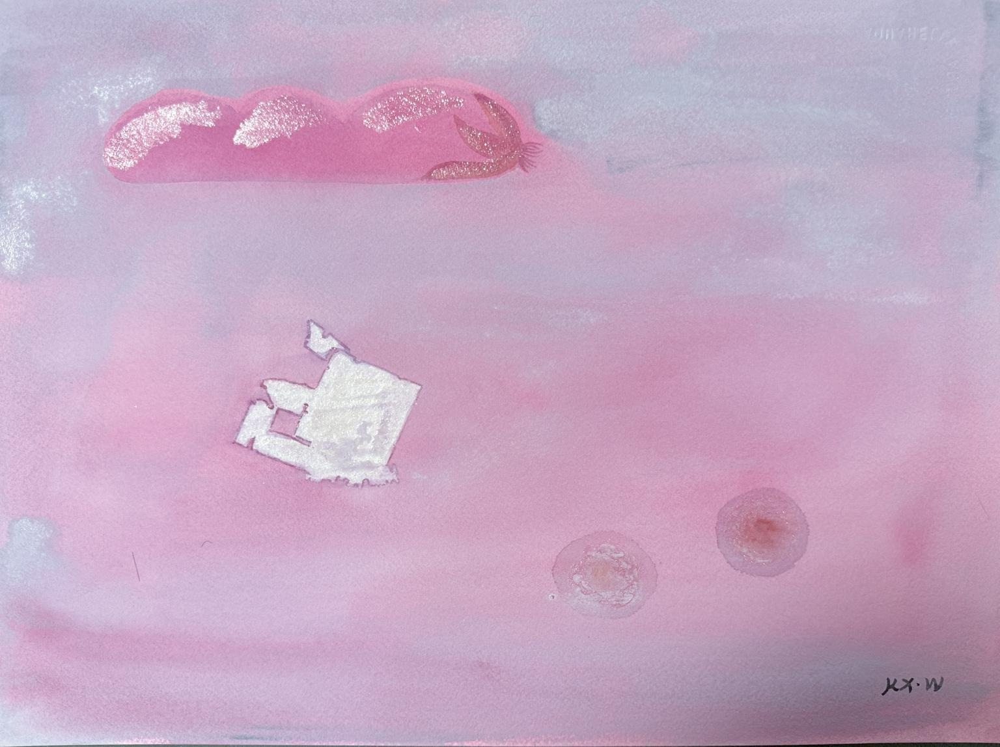

Out · Into
出·来

- Artwork ID / 作品编号
- KW-M-000001
- Year / 年份
- 2026
- Medium / 媒介
- Watercolor, acrylic and mixed media on paper / 纸本水彩、丙烯及综合材料
- Dimensions / 尺寸
- 28.5 × 38.3 cm (H × W / 高 × 宽)
Pink and grey layers form an unstable, dreamlike field, while reflective material shifts with light and viewpoint. The title separates the ordinary phrase into two movements: leaving and arriving. An escape from one relation may simply become an entry into another condition.
粉色与灰色叠成一个似真似幻的场域，闪光材料随光线与观看角度改变，使其中的形态时隐时现。作品源于一种试图脱离现实关系、进入另一处空间的冲动。“出”意味着离开，“来”却同时意味着进入：离开一个处境，也可能只是进入另一个“之内”。